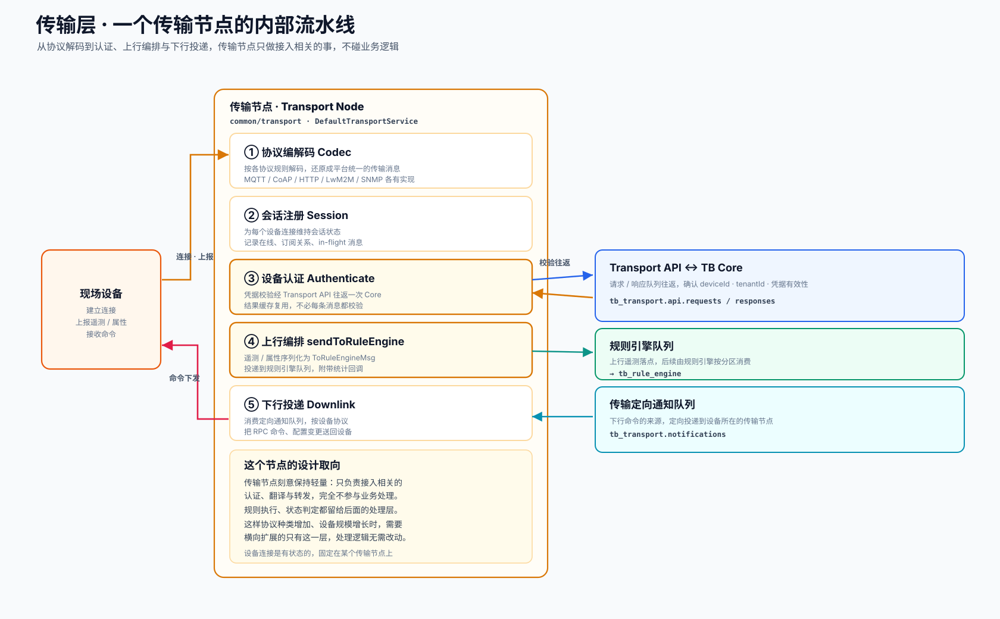

这一层在做什么
设备并不会说平台的语言。一台 Modbus 网关、一个 MQTT 传感器、一台支持 LwM2M 的终端，它们的连接方式、编码格式、交互节奏各不相同。传输层的作用，就是给每一种协议配一名专职翻译，把设备发来的原始报文，还原成平台内部统一的遥测、属性与事件。
这名翻译的工作范围被严格限定。它会确认来访设备的身份，会把数据转交给后续环节，但不会就数据本身做任何业务判断。这种安排带来一个直接的好处：当接入的协议越来越多、在线设备越来越密集时，扩容的对象只有传输节点本身，后面的处理逻辑完全不必随之改动。
内部流水线
一条设备消息进入传输节点后，依次经过五个阶段。其中认证与上行编排，分别要和 Core、规则引擎队列打交道。

五个阶段，逐一拆开
协议编解码 Codec
按照各自协议的规则解码进站报文，把它还原成平台统一的传输消息；出站时再编码回设备能理解的格式。这一阶段每种协议都有独立实现，互不影响。
会话注册 Session
为每个设备连接维持一份会话状态，记录在线情况、订阅关系、以及尚未确认的在途消息。设备的连接是有状态的，会固定停留在某个传输节点上。
设备认证 Authenticate
凭据校验并不在本地完成，而是经由 Transport API 往返一次 Core，确认 deviceId、tenantId 与凭据有效性。为了避免每条消息都付出这次往返的开销，校验结果会被缓存并在后续复用。
上行编排 sendToRuleEngine
认证通过后，遥测与属性被序列化为 ToRuleEngineMsg，投递到 tb_rule_engine 队列，并附带统计回调用于观测吞吐。这是设备数据正式进入处理环节的交接点。
下行投递 Downlink
传输节点同时消费一条定向通知队列，把来自平台的 RPC 命令、配置变更，按设备所用的协议送回设备。由于设备固定连接在某个节点上，下行命令需要被精确投递到那个节点。
两个值得留意的机制
认证往返与结果缓存
设备身份的判定权属于 Core，传输节点本身并不保存凭据库。因此每台设备首次接入时，传输节点会向 Core 发起一次 Transport API 调用来确认身份。考虑到设备会持续上报大量消息，把首次校验的结果缓存下来复用，能够显著降低这条往返链路的负担。
tb_transport.api.requests / responses有状态连接与下行定位
设备连接长期保持在某一个传输节点上，这是一种有状态的设计。它带来的影响在下行链路上格外明显：当平台想给设备下发命令时，发起方未必就是设备所连的那个节点，因此需要先定位设备所在的节点，再通过定向通知队列把命令精确送达。
tb_transport.notifications为什么把它做得这样轻量
传输层完全可以承担更多工作——就地做一些过滤、就地存一份数据、就地触发告警。把这些能力都留在传输层之外，是一个经过权衡的取舍。
原因在于职责边界。传输层面对的是设备接入这件事，它的压力来自连接数量与吞吐；而业务处理面对的是规则与状态，它的压力来自计算与一致性。两者混在一起，扩容时就会互相牵连。把传输层收窄成纯粹的接入与转发，处理逻辑沉到后面独立的服务里，两边便可以各自按照自己的瓶颈伸缩，互不拖累。
在整条链路中的位置
传输层上承接入层的设备连接，下游把数据投递到消息总线。它是设备数据进入处理流程前的最后一道接入环节。
上行方向，传输层把数据交给消息总线后便完成了使命；下行方向，它又从总线取回命令送达设备。这一进一出的两条路径，在总览页的端到端数据流里有逐跳的呈现，对照着看会更清楚它在序列中的两次出场。
源码位置
传输服务骨架
会话、认证、上行编排的公共逻辑，sendToRuleEngine 即在此。
common/transport/transport-api · DefaultTransportService协议适配器
五种协议各自的接入实现，独立成模块。
transport/mqtt · coap · http · lwm2m · snmp队列交互
认证往返与上行投递所用的队列设置与编解码。
common/queue/settings · provider